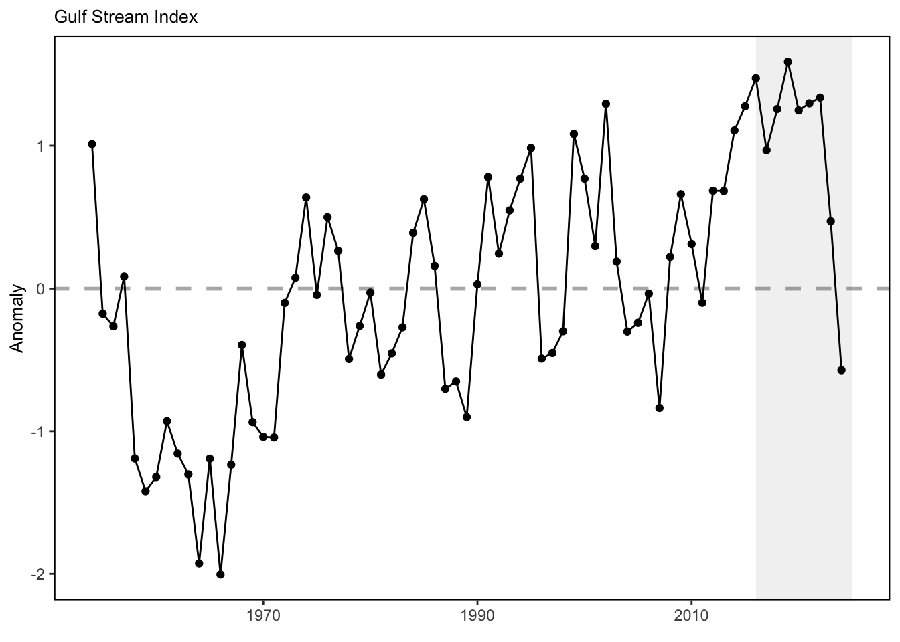
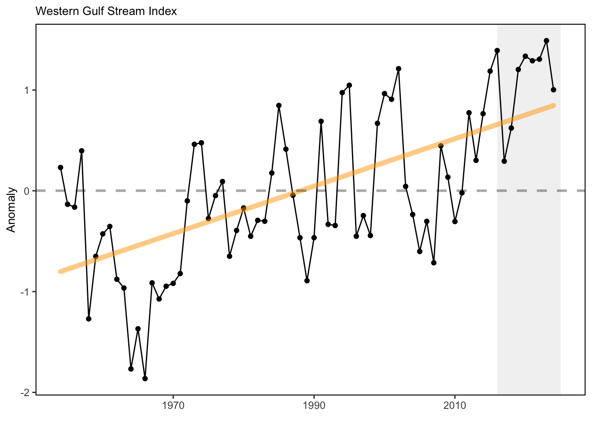

SMART Indicator Report: Gulf Stream Index
2 Indicator name
Gulf Stream Index
Includes variable(s): gulf stream index, western gulf stream index
3 Indicator brief description
The monthly Gulf Stream North Wall Index presented here are based on the gridded EN.4.2.2 analyses dataset from Jan. 1954 to Nov. 2024 (https://www.metoffice.gov.uk/hadobs/en4/), calculated following [82] and [83].
4 Indicator visualization
The Gulf Stream Index suggests that recent years (2021-2022) the GS almost maintains its relative northward shift relative to the long-term mean. Since Aug. 2023, the Gulf Stream is suggested to move southward, which is mainly due to its eastern part (east of 65°W). The Western Gulf Stream Index maintains its relative northward position during the past months since Aug. 2023.

## [1] "This indicator is only present in the `MidAtlantic` report"## [1] "This indicator is only present in the `MidAtlantic` report"5 Indicator documentation
5.1 Are indicators available for others to use (data downloadable)?
Yes
5.1.1 Where can indicators be found?
Data: https://noaa-edab.github.io/ecodata/index.html
Description: https://noaa-edab.github.io/catalog/gsi.html
Technical documentation: https://noaa-edab.github.io/tech-doc/gsi.html
5.1.2 How often are they updated? Are future updates likely?
[need sequential look at datasets for update frequency. Future requires judgement]
5.1.3 Who is the contact?
Zhuomin Chen (zhuomin.chen@uconn.edu)
5.2 Gather indicator statistics
5.2.2 Length of time series, start and end date, periodicity
General overview: Monthly from 1954 to 2024
Indicator specifics:
Indicator | EPU | StartYear | EndYear | NumYears | MissingYears |
|---|---|---|---|---|---|
gulf stream index | All | 1954.01 | 2024.11 | 851 | -779.9 |
western gulf stream index | All | 1954.01 | 2024.11 | 851 | -779.9 |
5.2.3 Spatial location, scale and extent
General overview: Gulf Stream between 74°W and 55°W
Indicator specifics:
Indicator | EPU |
|---|---|
gulf stream index | All |
western gulf stream index | All |
5.3 Are methods clearly documented to obtain source data and calculate indicators?
Yes
5.3.1 Can the indicator be calculated from current documentation?
The GSI is originally calculated by Pérez-Hernández and Joyce (2014), which is a simple 16-point GS index constructed by selecting grid points following the maximum Standard deviation of sea level height anomalies every 1.33° longitude between 52° and 72°W and averaging them. The value of 1.33° is based on the resolution of satellite dataset from AVISO. We followed the same method, except using the dataset from CMEMS, which now has a 0.125°x0.125° resolution available from Jan. 1993 to Dec. 2023. We calculated the standard deviation (STD) of SSH over the time period of 1993-2018, and select points every 1° between 52° and 72°W along the latitudinal maximum STD. Later, monthly SSH of these 21 points are averaged and standarized to obtain the time series from Jan. 1993 to Dec. 2023. For detailed analytical methods, see the supplemental info of Chen et al. (2021).
5.4 Are indicator underlying source data linked or easy to find?
Source data are publicly available at CMEMS(Product ID: SEALEVEL_GLO_PHY_L4_MY_008_047). Index data are NOT publicly available so please email vincent.saba@noaa.gov for further information and queries of GSI indicator data.
5.4.1 Where are source data stored?
Data used in this analysis come from Compernicus Marine Environment Monitoring Service CMEMS - GLOBAL OCEAN GRIDDED L4 SEA SURFACE HEIGHTS AND DERIVED VARIABLES REPROCESSED (1993-ONGOING)(Product ID: SEALEVEL_GLO_PHY_L4_MY_008_047).
5.4.2 How/by whom are source data updated? Are future updates likely?
Vincent Saba, vincent.saba@noaa.gov
[likelihood of source data updates requires judgement, enter by hand]
6 Indicator analysis/testing or history of use
6.1 What decision or advice processes are the indicators currently used in?
The T200-based Gulf Stream Index is calculated as the standardized first principal component time series from the empirical orthogonal function (EOF) analysis of the 200 m temperature time series at the 20 base points (selected along the climatological (1954-2018) 15°C isotherm at 200 m between 74° and 55°W; 1° longitudinal resolution) and it represents the meridional fluctuation of the Gulf Stream North Wall [82,84,85]. The T200-based Western Gulf Stream Index is calculated using the same method, except only selecting the western 10 base points (instead of all 20 base points between 74° and 55°W). It suggests the meridional shift of the western part of the Gulf Stream North Wall.
6.2 What implications of the indicators are currently listed?
The Gulf Stream North Wall Index indicates the meridional shift of the Gulf Stream position on monthly timescale, which may affect the slope water properties intruding onto the continental shelf. The GSNW index is also suggested to be an good indicator for biomass distribution of multiple marine fishes (e.g., silver hake [86]). As the Gulf Stream has become less stable and shifted northward in the last decade, warmer ocean temperatures have been observed on the northeast shelf [87], and a higher proportion of Warm Slope Water has been present in the Gulf of Maine Northeast Channel [88], and sea surface height along the U.S. east coast has increased. Since 2008, the Gulf Stream has moved closer to the Grand Banks, reducing the supply of cold, fresh, and oxygen-rich Labrador Current waters to the Northwest Atlantic Shelf [89].
6.3 Do target, limit, or threshold values already exist for the indicator?
[Fill by hand; if not in key results or implications, likely does not exist]
6.4 Have the indicators been tested to ensure they respond proportionally to a change in the underlying process?
[Fill by hand; if not in introduction, key results, or implications, likely not tested]
7 Comments
[Fill below by hand once above data complete]
7.1 Additional potential links to management in addition to uses listed above
7.2 What additional work would be needed for the Council to use the indicator?
7.3 What issues are caused if there is a gap or delay in data underlying the indicator